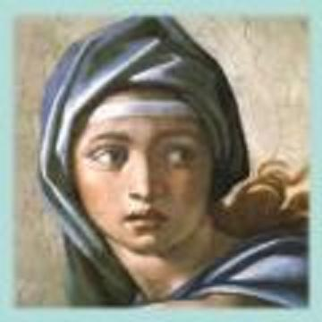

XIX BEAUTE
...bagages ni - laissant la nef sur la rive
Ils poursuivirent leur chemin - rejetés,
Présents, ayant percé le mot et arrivèrent
Au temple en songe surgi. Je t'ai
Rencontrée quand brasillaient les orages
Et les obsessions au coeur des vergers
Infernaux. Notre sang reflua où l'âge
Ni le corps ne s'abreuvèrent. Etrangers
A tout hors la terreur qui fut notre unique
Refuge, un tremblement nous saisit et nous
Fûmes pareils à l'esclave que la trique
Du blanc vers l'ergastule pousse à grands coups.
Née un matin à la lueur d'une rose-
"Amour est nu". Les voyageurs ne comprirent
Pas. Ils avaient pour appuyer leur cause
Auprès du roi, chargé d'étoffes de prix
Leur barque - Nous avons regagné le ventre
Inoublié, le silence lourd, le sang -
Après vingt jours de marche ce fut dans l'antre
De Sibylle que le feu parla et sans...
****
Comme des astres scintillant sur nos têtes,
Le grondement qui nous aura poursuivis,
Par vals et monts jusqu'à nos dernières fêtes.
J'ai retrouvé la lueur qui m'a ravi
Dans un univers de blizzards et de glace.
Sur le seuil de l'éveil je reviens, hanté
D'une musique sans pitié pour tenace
Renaître en toi l'inaccessible - beauté.
Michel Galiana (c) 1991
XIX BEAUTY
...luggage or - on the shore they'd left their ship behind
And carried on their way - they were cast out to be
Present, as they had guessed the word, and they could find
The temple that had surged in their dream. As for me
I have encountered you when were lightning the storms
Obsessively amidst the infernal gardens.
Our blood was flowing back where neither age nor forms
Could assuage their thirst. Insensitive aliens
To anything except terror, our sole refuge,
A shiver has seized us and we were like the slave
Whom the white man's cudgel with showering abuse
And hails of hits drives towards his prison-grave.
One morning you were born in the shine of a rose -
"Love is bare". But this was beyond understanding
For voyagers who had, to better plead their cause
At the King's judgment throne, loaded with precious things
Their boat - And we went back to unforgotten womb
To ponderous silence and ever flowing blood-
And twenty walking days later, 'twas in the tomb
Of Sibyl that the fire at last spoke and without...
***
Like the stars that high up sparkle above our brows,
Rumbling escorted us restlessly, all the way,
Over valleys and hills down to our last carouse.
Until at last I found the gleam that once took me
To this strange universe of snow, of ice, of storm,
Now when awakening is nigh, a melody
Ruthlessly assails me: stubborn, to be reborn
In you, I turn to you, ever remote - beauty!
Transl. Christian Souchon 01.01.2006 (c) (r) All rights reserved
Tout comme "Ulysse à Montparnasse" ce poème fait référence à un ouvrage de James Joyce, "Finnegan's Wake". Comme l'Histoire dans le modèle, c'est ici la recherche de la beauté qui est cyclique et le poème commence par la fin de la phrase qui termine la cinquième strophe. Les phrases peuvent être combinées de diverses façons. Le récit est à la fois une narration et un rêve.
Le sujet n'est guère éloigné de celui du poème en ancien-gallois Les dépouilles de l'Abîme dès lors que l'on remplace "beauté" par "inspiration poétique". Je ne sais pas si Michel connaissait ce poème gallois. Dans la négative, il aura retrouvé d'instinct les mêmes images fortes: le voyage à travers une mer hostile vers un lieu d'où l'on revient régénéré. Michel commence son récit à la deuxième personne du pluriel, mais dans les deux dernières strophes, c'est un "je" qui a "retrouvé la lueur" et "abordé au seuil de l'éveil". Dans les "Dépouilles", de la foule d'aspirants-poètes qui remplissait trois bateaux de la taille de Prydwen, il n'y eut que sept rescapés...
Les poètes, par-delà le temps et l'espace, parlent le même langage...
Like "Ulysses in Montparnasse" this poem refers to one of James Joyce's works, "Finnegan's Wake". History in the model, the quest of beauty in the present poem are cyclic and the text begins with the end of a sentence left unfinished in the fifth verse. Some sentences could be recombined in different ways. The narrative is both a factual report and a dream.
The subject of the Old-Welsh poem Spoils of the Otherworld is not far from this poem inasmuch as Beauty is akin to Poetic Inspiration. I don't think Michel knew the Welsh poem, but he instinctively rediscovered similar images: a voyage through a hostile environment to a place from which one returns regenerated. Michel begins by saying "we". In the last 2 stanzas, he is the only one to have "rediscovered the glow" and "enjoyed the awakening". In the "Spoils", of the troop of candidates for Poetic Inspiration, that filled 3 boats the size of Prydwen, only seven returned ...
Poets, across time and space, seem to speak the same language...